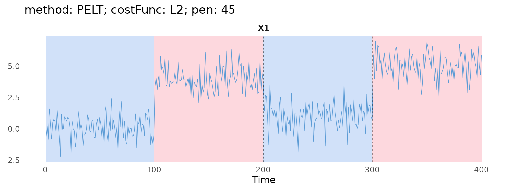

Tuning the penalty
case-study-pen.RmdThis case study chooses pen for PELT with
the "L2" cost. It runs PELT over a grid of
penalty values, records the number of change-points for each, and picks
a pen where that number is stable.
This is useful when you would rather not use the methods in Model selection, or when the method has
no elbow plot. PELT only returns the segmentation for a
given pen, so it has no $getHistory() or
$plotElbow().
We simulate a series with three changes in mean, at 100, 200 and 300.
set.seed(1)
tsMat = as.matrix(c(rnorm(100, 0), rnorm(100, 4), rnorm(100, 1), rnorm(100, 5)))
PELTObj = PELT$new(minSize = 1L, jump = 1L, costFunc = costFunc$new("L2"))
PELTObj$fit(tsMat)Number of change-points against pen
The grid is evenly spaced on a log scale. It starts at 5, which is
small enough to let noise in. It ends at the cost of the whole series
with no change-point, given by $eval(). With a larger
pen, any change-point costs more than it can save, so
PELT returns none.
maxPen = PELTObj$eval(0, nrow(tsMat))
pens = exp(seq(log(5), log(maxPen), length.out = 50))
nCps = sapply(pens, function(pen) length(PELTObj$predict(pen = pen)) - 1)$predict() returns the end-points, including
n, so the number of change-points is one less than its
length. The object is fitted once, so each pen only needs a
new $predict().
plot(pens, nCps, type = "s", log = "x",
xlab = "pen (log scale)", ylab = "Number of change-points")A small pen lets noise through as extra change-points. A
very large pen drops the true ones. In between, the number
of change-points stays the same over a wide range of pen.
That plateau is what we look for.
Picking pen from the plateau
We take the longest run of equal counts, and the pen in
the middle of it.
runs = rle(nCps)
i = which.max(runs$lengths)
last = cumsum(runs$lengths)[i]
first = last - runs$lengths[i] + 1
penChosen = pens[(first + last) %/% 2]
c(nCps = runs$values[i], from = pens[first], to = pens[last], pen = penChosen)
#> nCps from to pen
#> 3.000000 5.651823 364.433734 45.384082The plateau is at 3 change-points, the true number. PELT
is exact, so every pen on the plateau gives the same
change-points.
PELTObj$predict(pen = penChosen)
#> [1] 100 200 300 400
The longest run is a simple rule. Look at the plot too: a short plateau, or two of similar length, means the data do not point to one clear number of change-points.